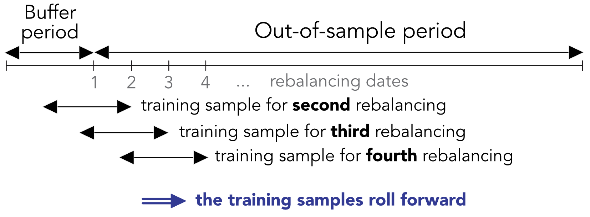
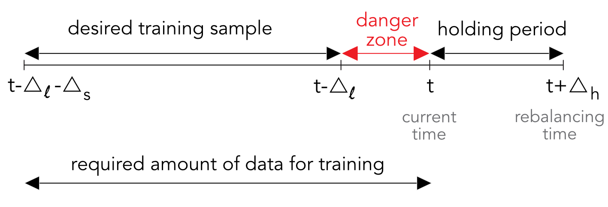
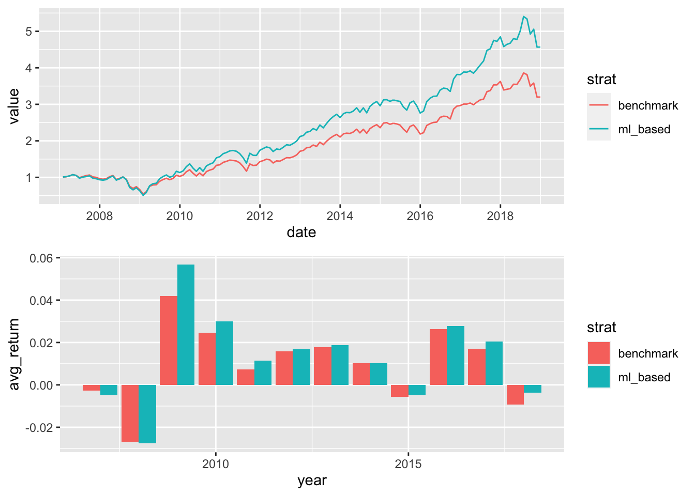
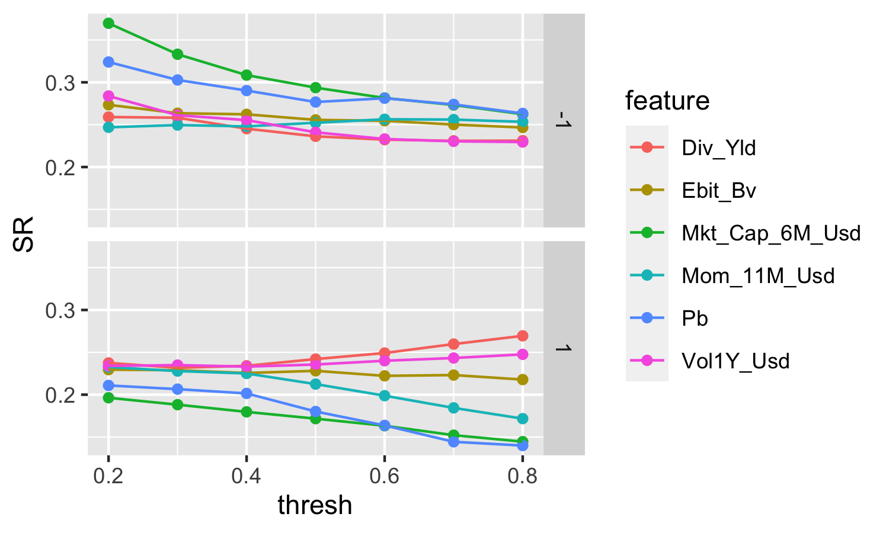

12 投资组合回测
在本节中，我们介绍分析和比较投资策略时将使用的符号和框架。投资组合回测通常被认为是寻找最佳策略——或者至少是一个稳定盈利的策略。如果彻底实施，这种可能漫长的努力可能会诱使外行人将侥幸与强有力的策略混为一谈。连续发表的两篇论文对 数据窥探的危险 发出警告，该漏洞与 \(p\) 黑客攻击有关。在这两种情况下，研究人员都会对数据进行拷问，直到找到想要的结果。
Fabozzi and Prado (2018) 承认只有有效的策略才会向公众公布，而数千（至少）已经过测试。当转向真实交易时，选择令人愉悦的异常值（似乎唯一有效的策略）可能会产生失望。同样，R. Arnott, Harvey, and Markowitz (2019) 提供了任何分析师都应遵循的原则和保障措施列表，以避免在回测策略时出现任何类型的错误。最糟糕的类型可以说是 误报，其中策略（通常是通过挑选）在一种非常特定的环境中表现出色，但在实际实施中可能会失败。
除了这些关于投资组合构建的建议外，R. Arnott et al. (2019)还警告不要盲目投资与学术因子相关的smart beta产品的危险。坦率地说，期望不应该设定得太高，否则就会面临失望的风险。他们文章的另一个要点是 经济周期 对因子收益率有很大影响：相关性变化很快，在经济严重衰退时期，回撤可能会被放大。
回测比看起来更复杂，很容易犯一些小错误，从而导致 显然 良好的投资组合策略。本章提出了此练习的严格方法，讨论了一些注意事项，并提出了一个冗长的示例。
12.1 设定流程
我们考虑一个具有三个维度的数据集：时间 \(t=1,\dots,T\)、资产 \(n=1,\dots,N\) 和特征 \(k=1,\dots,K\)。这些属性之一必须是资产 \(n\) 在时间 \(t\) 的价格，我们将其表示为 \(p_{t,n}\)。由此看来，算术收益率的计算很简单（\(r_{t,n}=p_{t,n}/p_{t-1,n}-1\)），任何盈利能力的启发式衡量也是如此。为简单起见，我们假设时间点是等距或均匀的，即 \(t\) 是交易日或月份的索引。如果每个时间点 \(t\) 都有可用于所有资产的数据，则这将生成一个具有 \(I=T\times N\) 行的数据集。
数据集首先分为两部分：样本外时段和 初始缓冲区 时段。需要缓冲期来训练第一个投资组合组合的模型。该周期由训练样本的大小决定。此大小有两种选择：固定（通常等于 2 至 10 年）和扩展。在第一种情况下，训练样本将随时间推移滚动，仅考虑最新数据。在第二种情况下，模型建立在所有可用数据的基础上，数据的大小随着时间的推移而增加。最后一个选项可能会产生问题，因为与最后一个日期相比，回测的第一个日期基于的信息量要少得多。此外，关于包含收益和特征的完整历史记录是否有利仍存在争论。支持者认为这允许模型看到许多不同的 市场状况。反对者认为，旧数据从定义上来说已经过时，因此毫无用处，并且可能具有误导性，因为它不能反映当前或未来的短期波动。
此后，我们为训练样本选择滚动周期选项，如图 12.1 所示。

图 12.1：使用滚动窗口进行回测。第一个周期的训练集简单来说就是缓冲期。
两个关键的设计选择是计算标签的 再平衡频率 和 地平线。他们应该平等并不明显，但他们的选择应该有意义。在 12 个月的远期标签（捕捉更长的趋势）上进行培训并按月或按季度进行投资似乎是正确的。然而，反其道而行之，训练短期走势（每月）并进行长期投资似乎很奇怪。
这些选择直接影响回测的进行方式。如果我们注意到：
- \(\Delta_h\) 为 2 个再平衡日期之间的持有期限（以天或月为单位）；
- \(\Delta_s\) 表示所需训练样本的大小（以天或月为单位 - 不考虑资产数量）；
- \(\Delta_l\) 表示计算标签的时间范围（以天或月为单位），
那么训练样本的总长度应为 \(\Delta_s+\Delta_l\)。事实上，在任何时刻 \(t\)，训练样本都应该在 \(t-\Delta_l\) 处停止，以便最后一个点对应于直到时间 \(t\) 为止计算的标签。这在图 12.2 中以红色危险区域的形式突出显示。我们将其称为红色区域，因为任何在 \((t-\Delta_l,t]\) 区间内具有时间索引 \(s\) 的观察都会产生前瞻性偏差。事实上，如果某个功能由 \(s \in (t-\Delta_l,t]\) 索引，那么根据定义，标签将用 \(s+\Delta_l>t\) 覆盖句点 \([s,s+\Delta_l]\)。在时间\(t\)，这需要了解未来，自然是不现实的。

图 12.2：滚动训练样本的微妙之处。
12.2 将信号转化为投资组合权重
5 至 11 章中概述的预测工具仅旨在提供一个信号，预计会提供有关资产未来盈利能力的一些信息。可以通过多种方式将此信号集成到投资决策中（有关将 ML 工具集成到此任务中的方法，请参阅 Snow (2020)）。
首先，投资组合构建过程中至少有两个步骤，并且信号可以在任何这些阶段使用。依赖这两个步骤的信号非常重视预测，只有当预测的置信度很高时才应考虑。
第一步是 选择。虽然可以对大量资产进行预测，但并不强制投资所有这些资产。事实上，对于只做多的投资组合来说，利用该信号排除那些未来可能表现不佳的资产是有意义的。通常，投资组合策略具有固定的规模，从而强制规定固定数量的资产。利用信号的一种启发式方法是选择具有最有利预测的资产并丢弃其他资产。这种幼稚的想法经常在资产定价文献中使用：投资组合是根据基本特征的分位数形成的，如果相应的 排序投资组合 表现出截然不同的盈利能力（例如，高分位数的高平均收益率与低分位数的低平均收益率），则某些特征被认为是有趣的。
例如，这是测试信号相关性的有效方法。如果 \(Q\) 投资组合 \(q=1,\dots,Q\) 是根据资产相对于信号的排名形成的，那么人们会期望投资组合的样本外表现与 \(q\) 单调。虽然严格的单调性测试需要考虑所有投资组合（例如，参见 Romano and Wolf (2013)），但通常只假设极端投资组合就足够了。如果投资组合编号 1 和投资组合编号 \(Q\) 之间的差异很大，则该信号很有价值。只要投资者能够做空资产，这就相当于美元中性策略。
第二步是 加权。如果选择过程依赖于信号，那么简单的加权方案通常是一个好主意。众所周知，等权重投资组合很难被击败（参见 DeMiguel, Garlappi, and Uppal (2009)），特别是与其上限加权投资组合相比，如 Plyakha, Uppal, and Vilkov (2016) 所示。更先进的计划包括等风险缴款 (Maillard, Roncalli, and Teiletche (2010)) 和约束最小方差 (Coqueret (2015))。两者仅依赖于资产的协方差矩阵，而不依赖于任何预期收益率向量的代理。
为了完整起见，我们明确了 Coqueret (2015) 的泛化，它是一个通用的约束二次规划： \[\begin{equation} \tag{12.1} \underset{\textbf{w}}{\text{min}} \ \frac{\lambda}{2} \textbf{w}'\boldsymbol{\Sigma}\textbf{w}-\textbf{w}'\boldsymbol{\mu} , \quad \text{s.t.} \quad \begin{array}{ll} \textbf{w}'\textbf{1}=1, \\ (\textbf{w}-\textbf{w}_-)'\boldsymbol{\Lambda}(\textbf{w}-\textbf{w}_-) \le \delta_R,\\ \textbf{w}'\textbf{w} \le \delta_D, \end{array} \end{equation}\]
很容易识别左侧常见的 均值方差优化 。我们在右侧施加三个约束。23 第一个是预算约束（权重总和为 1）。第二个通过对角矩阵 \(\boldsymbol{\Lambda}\) 惩罚权重的变化（与当前分配 \(\textbf{w}_-\) 相比），从而惩罚交易成本。这是一个关键点。投资组合很少是从头开始构建的，大多数时候都是从现有头寸 调整 开始构建的。为了减少订单和相应的交易成本，可以惩罚现有投资组合的较大变化。在上面的程序中，当前权重写为 \(\textbf{w}_-\) ，所需权重写为 \(\textbf{w}\) ，因此 \(\textbf{w}-\textbf{w}_-\) 是与当前位置的偏差向量。 \((\textbf{w}-\textbf{w}_-)'\boldsymbol{\Lambda}(\textbf{w}-\textbf{w}_-)\) 项是表征偏差平方和的表达式，由对角线系数 \(\Lambda_{n,n}\) 加权。这可能会有所帮助，因为由于流动性，某些资产的交易成本可能更高（大盘股流动性更强，交易成本更低）。当\(\delta_R\)减小时，旋转减小，因为重量不允许偏离\(\textbf{w}_-\)太多。最后一个约束通过投资组合的 Herfindhal-Hirschmann 指数强制执行 多样化：\(\delta_D\) 越小，投资组合越多元化。
回想一下宇宙中存在 \(N\) 资产，(12.1) 的拉格朗日形式为：
\[\begin{equation} \tag{12.2} L(\textbf{w})= \frac{\lambda}{2} \textbf{w}'\boldsymbol{\Sigma}\textbf{w}-\textbf{w}'\boldsymbol{\mu}-\eta (\textbf{w}'\textbf{1}_N-1)+\kappa_R ( (\textbf{w}-\textbf{w}_-)'\boldsymbol{\Lambda}(\textbf{w}-\textbf{w}_-) - \delta_R)+\kappa_D(\textbf{w}'\textbf{w}-\delta_D), \end{equation}\]
以及一阶条件 \[\frac{\partial}{\partial \textbf{w}}L(\textbf{w})= \lambda \boldsymbol{\Sigma}\textbf{w}-\boldsymbol{\mu}-\eta\textbf{1}_N+2\kappa_R \boldsymbol{\Lambda}(\textbf{w}-\textbf{w}_-)+2\kappa_D\textbf{w}=0,\] 产量 \[\begin{equation} \tag{12.3} \textbf{w}^*_\kappa= (\lambda \boldsymbol{\Sigma}+2\kappa_R \boldsymbol{\Lambda} +2\kappa_D\textbf{I}_N)^{-1} \left(\boldsymbol{\mu} + \eta_{\lambda,\kappa_R,\kappa_D} \textbf{1}_N+2\kappa_R \boldsymbol{\Lambda}\textbf{w}_-\right), \end{equation}\] 与 \[\eta_{\lambda,\kappa_R,\kappa_D}=\frac{1- \textbf{1}_N'(\lambda\boldsymbol{\Sigma}+2\kappa_R \boldsymbol{\Lambda}+2\kappa_D\textbf{I}_N)^{-1}(\boldsymbol{\mu}+2\kappa_R\boldsymbol{\Lambda}\textbf{w}_-)}{\textbf{1}'_N(\lambda \boldsymbol{\Sigma}+2\kappa_R \boldsymbol{\Lambda}+2\kappa_D\textbf{I}_N)^{-1}\textbf{1}_N}.\]
该参数确保满足预算约束。 (12.3) 中的最佳权重取决于三个调节参数：\(\lambda\)、\(\kappa_R\) 和 \(\kappa_D\).
- 当 \(\lambda\) 较大时，重点更多地放在降低风险上，而不是利润最大化（考虑到风险更容易预测，这通常是一个好主意）；
- 当\(\kappa_R\)很大时，(12.2)中交易成本的重要性很高，因此，在\(\kappa_R \rightarrow \infty\)时的限制下，最优权重等于旧的\(\textbf{w}_-\)（对于其他参数的有限值）.
- 当 \(\kappa_D\) 较大时，投资组合更加多元化，（在其他条件相同的情况下）当 \(\kappa_D \rightarrow \infty\) 时，权重均相等（与 \(1/N\) 相比）.
- 当 \(\kappa_R=\kappa_D=0\) 时，我们恢复经典的均值方差权重，该权重是与 \((\boldsymbol{\Sigma})^{-1} \boldsymbol{\mu}\) 成比例的最大夏普比率投资组合和与 \((\boldsymbol{\Sigma})^{-1} \textbf{1}_N\) 成比例的最小方差投资组合之间的混合。
这个看似复杂的公式实际上非常灵活且易于处理。在找到 \(\lambda\)、\(\kappa_R\) 和 \(\kappa_D\) 的实际值之前，需要进行一些测试和调整（请参阅本章末尾的练习）。在 Pedersen, Babu, and Levine (2020) 中，作者推荐了类似的形式，只不过协方差矩阵向样本方差的对角矩阵收缩，并且预期收益是信号和锚组合之间的混合。作者认为，他们的一般公式与鲁棒优化（另见W. C. Kim, Kim, and Fabozzi (2014)）、贝叶斯推理（Lai et al. (2011)）、通过随机矩阵理论进行矩阵去噪以及自然地收缩率有关。事实上，预期预期收益率收缩已经存在相当长一段时间了（Jorion (1985)、Kan and Zhou (2007) 和 Bodnar, Parolya, and Schmid (2013)），只是为了分散风险并降低估计风险。
12.3 绩效指标
性能评估是回测的关键阶段。本节虽然并不详尽，但旨在涵盖投资组合评估的最重要方面。
12.3.1 讨论
虽然对 ML 工具准确性的评估（参见 10.1 节）当然很有价值（而且势在必行！），但投资组合收益率是回测期间的最终衡量标准。这种练习中的一个基本要素是 基准，因为原始和绝对指标本身并没有多大意义。
这不仅在产品组合级别如此，在 ML 引擎级别也是如此。在前面章节的大部分试验中，测试集上模型的 MSE 都在 0.037 左右。一个有趣的数字是该集合一个月收益率的方差，它对应于始终为 0 的恒定预测所产生的误差。这个数字等于 0.037，这意味着复杂的算法并没有真正改进朴素的启发式算法。该基准是在 Gu, Kelly, and Xiu (2020b) 的样本外 \(R^2\) 中使用的基准。
在投资组合选择中，最基本的配置是统一配置，即每种资产获得相同的权重。这个看似简单的解决方案实际上是一个令人难以置信的基准，一个很难被一致击败的基准（参见 DeMiguel, Garlappi, and Uppal (2009) 和 Plyakha, Uppal, and Vilkov (2016)）。从理论上讲，当不确定性、模糊性或估计风险较高时（Pflug, Pichler, and Wozabal (2012)、Maillet, Tokpavi, and Vaucher (2015)、L. Zhao and Gao (2022)），统一投资组合是最佳的，而根据经验，即使在因子水平（Dichtl, Drobetz, and Wendt (2020)），它也无法超越。下面，我们将选择所有股票的 等权重 (EW) 投资组合作为我们的基准。
12.3.2 纯绩效和风险指标
然后我们转向从业者和学者所使用的常用指标的定义。此后，我们分别用 \(r^P=(r_t^P)_{1\le t\le T}\) 和 \(r^B=(r_t^B)_{1\le t\le T}\) 表示投资组合的收益率和基准的收益率。当提到一些通用收益率时，我们简单地写成\(r_t\)。分析它们的方法有很多，其中大多数依赖于它们的分布。
最简单的指标是平均收益率： \[\bar{r}_P=\mu_P=\mathbb{E}[r^P]\approx \frac{1}{T}\sum_{t=1}^T r_t^P, \quad \bar{r}_B=\mu_B=\mathbb{E}[r^B]\approx \frac{1}{T}\sum_{t=1}^T r_t^B,\]
显然，如果 \(\mathbb{E}[r^P]>\mathbb{E}[r^B]\)，则该投资组合值得注意。请注意，我们使用上面的算术平均值，但几何平均值也是一种选择，在这种情况下： \[\tilde{\mu}_P\approx \left(\prod_{t=1}^T(1+r^P_t) \right)^{1/T}-1 , \quad \tilde{\mu}_B \approx \left(\prod_{t=1}^T(1+r^B_t) \right)^{1/T}-1.\] 第二个定义的好处是它考虑了收益率的复利，从而补偿了波动性泵送。要了解这一点，请考虑一个非常简单的两期模型，其返回 \(-r\) 和 \(+r\)。算术平均值为零，但几何平均值 \(\sqrt{1-r^2}-1\) 为负。
与准确度类似，它用比率来评估仓位处于正确方向的次数比例（实现收益为正时做多，为负时做空）。因此，命中率评估了 很好的猜测 的倾向。这可以在资产层面（正确方向24的头寸比例）或投资组合层面进行计算。在所有情况下，计算都可以根据原始收益或相对收益（例如，与基准进行比较）来执行。有意义的命中率是策略击败其基准的次数比例。这当然是不够的，因为许多小的收益可以被一些大的损失所抵消。
最后，一个重要的精度。在书中所有监督学习工具的示例中，我们将命中率与 0.5 进行比较。这实际上是错误的，因为如果投资者看涨，他或她可能总是押注价格上涨。在这种情况下，命中率是收益率为正的时间的百分比。从长远来看，这个概率在0.5以上。在我们的样本中，它等于 0.556，远高于 0.5。这可以被视为一个需要超越的基准。
纯绩效衡量指标几乎总是伴随着 风险衡量指标。收益二阶矩通常用来量化投资组合波动的幅度。较大的方差意味着收益率的大幅变动，从而导致投资组合价值的大幅变动。这就是为什么收益率的标准差被称为投资组合的 波动性 。 \[\sigma^2_P=\mathbb{V}[r^P]\approx \frac{1}{T-1}\sum_{t=1}^T (r_t^P-\mu_P)^2, \quad \sigma^2_B=\mathbb{V}[r^B]\approx \frac{1}{T-1}\sum_{t=1}^T (r_t^B-\mu_B)^2.\]
在这种情况下，如果与基准相比风险较小，即当 \(\sigma_P^2<\sigma_B^2\) 和平均收益率相等（或可比较）时，则可以优先选择该投资组合。
有时会使用高阶收益率矩（偏度和峰度），但它们不太常见。例如，我们参考 C. R. Harvey et al. (2010) 作为在投资组合构建过程中考虑到它们的一种方法。
对于某些人来说，波动性是衡量风险的不完整指标。有人认为，应该将其分解为“良好”波动性（当价格上涨时）与“不良”波动性（当价格下跌时）。向下半方差计算为负收益的方差： \[\sigma^2_-\approx \frac{1}{\text{card}(r_t<0)}\sum_{t=1}^T (r_t-\mu_P)^21_{\{r_t<0\}}.\]
平均收益率和波动率是从业者使用的典型的基于矩的指标。其他指标依赖于收益率分布的不同方面，重点关注尾部和极端事件。 风险价值 (VaR) 就是这样的一个例子。如果 \(F_r\) 是收益率的经验累积分布函数，则置信水平 \(\alpha\)（通常取 95%）下的 VaR 为 \[\text{VaR}_\alpha(\textbf{r}_t)=F_r(1-\alpha).\]
它等于实现平均预期在 \((1-\alpha)\)% 时间内发生的不良情况（收益率）。 更保守的衡量标准是所谓的 条件风险价值 (CVaR)，也称为预期缺口，它计算最坏 (\(1-\alpha\))% 情景的平均损失。其实证评价为 \[\text{CVaR}_\alpha(\textbf{r}_t)=\frac{1}{\text{Card}(r_t < \text{VaR}_\alpha(\text{r}_t))}\sum_{r_t < \text{VaR}_\alpha(\text{r}_t)}r_t.\]
随着风险措施的严重性逐渐增强，损失的最终评估是最大回撤。它等于策略峰值所遭受的最大损失。如果我们写\(P_t\)暂时-\(t\)投资组合的价值，回撤是\[D_T^P=\underset{0 \le t \le T}{\text{max}} P_t-P_T ,\]最大回撤是\[MD_T^P=\underset{0 \le s \le T}{\text{max}} \left(\underset{0 \le t \le s}{\text{max}} P_t-P_s, 0\right) .\]
该数量评估 \([0,T]\) 时间范围内的最大损失，因此是所有风险衡量标准中最保守的。
12.3.3 基于因素的评估
本着因子模型的精神，性能也可以通过曝光的镜头来评估。如果我们回忆一下方程 (3.1) 的原始公式： \[r_{t,n}= \alpha_n+\sum_{k=1}^K\beta_{t,k,n}f_{t,k}+\epsilon_{t,n}, \]
那么估计的 \(\hat{\alpha}_n\) 就是无法用其他因素解释的性能。当收益率为 超出 收益率（超过无风险利率）并且只有一个因素（市场因素）时，该数量称为 Jensen 阿尔法 (Jensen (1968))。通常，它简称为 alpha。另一个估计值 \(\hat{\beta}_{t,M,n}\)（\(M\) 代表市场）是市场贝塔值。
由于因子投资的兴起，报告更详尽的回归的 alpha 已成为惯例。添加规模和价值溢价（如Fama and French (1993)），甚至动量（Carhart (1997)）有助于了解策略是否产生超出通过通常因素获得的价值。
12.3.4 风险调整指标
现在，自 Markowitz (1952) 以来，平均收益率与波动性之间的权衡是现代金融的基石。综合这两个指标的最简单方法是通过 信息比率： \[IR(P,B)=\frac{\mu_{P-B}}{\sigma_{P-B}},\] 其中指数 \(P-B\) 意味着平均值和标准差是根据收益率为 \(r_t^P-r_t^B\) 的多空投资组合计算的。分母 \(\sigma_{P-B}\) 有时称为 跟踪误差。
最广泛的信息比率是 夏普比率 (Sharpe (1966))，其基准是某种无风险资产。人们通常习惯比较它们的夏普比率，而不是直接计算两个投资组合或策略之间的信息比率。简单的比较可以从统计测试中受益（例如，参见Oliver Ledoit and Wolf (2008)）。
更极端的风险衡量标准可以作为风险调整指标的分母。例如，管理账户报告 (MAR) 比率计算如下 \[MAR^P = \frac{\tilde{\mu}_P}{MD^P},\] 而特雷诺比率等于 \[\text{Treynor}=\frac{\mu_P}{\hat{\beta}_M},\] 即（超额）收益率除以市场贝塔值（参见 Treynor (1965)）。这个定义被 Hübner (2005) 推广到多因素阐述中，形成广义 Treynor 比率： \[\text{GT}=\mu_P\frac{\sum_{k=1}^K\bar{f}_k}{\sum_{k=1}^K\hat{\beta}_k\bar{f}_k},\] 其中 \(\bar{f}_k\) 是因子 \(f_{t,k}\) 的样本平均值。我们参考原始文章来详细说明该比率的分析特性。
12.3.5 交易成本和换手率
更新投资组合构成并不是免费的。一般来说，在 \(t\) 时间进行一次再平衡的总成本与 \(C_t=\sum_{n=1}^N | \Delta w_{t,n}|c_{t,n}\) 成正比，其中 \(\Delta w_{t,n}\) 是资产 \(n\) 的头寸变化，\(c_{t,n}\) 是相应的费用。最后一个数量通常很难预测，因此通常使用取决于市值（大股票拥有更多流动性股票，因此需要较小费用）或买卖差价（较小的差价意味着较小的费用）等的代理。
作为一阶近似，计算平均换手率通常很有用： \[\text{Turnover}=\frac{1}{T-1}\sum_{t=2}^T\sum_{n=1}^N|w_{t,n}-w_{t-,n}|,\] 其中 \(w_{t,n}\) 是投资组合中所需的 \(t\) 时间权重，\(w_{t-,n}\) 是再平衡之前的权重。按照惯例，第一周期的位置（发射重量）被排除在计算之外。然后，交易成本可以用换手率的倍数来表示（乘以公司横截面中的平均或中值成本）。这是对已实现成本的一阶估计，未考虑投资组合规模的演变。尽管如此，有一个粗略的数字总比没有好得多。
一旦交易成本 (TC) 被年化，就可以从平均收益率中扣除，以获得更真实的盈利能力。同样，投资组合 \(P\) 的交易成本调整夏普比率由下式给出 \[\begin{equation} \tag{12.4} SR_{TC}=\frac{\mu_P-TC}{\sigma_P}. \end{equation}\]
交易成本在学术文章中经常被忽视，但在现实生活中的交易中可能会产生相当大的影响（例如，参见 Novy-Marx and Velikov (2015)）。 DeMiguel et al. (2020) 展示如何使用因子投资（和风险敞口）来合并和抵消头寸并降低总体费用。
12.4 常见错误和问题
12.4.1 前瞻性数据
投资组合回测中最常见的错误之一是使用前瞻性数据。例如，很容易陷入图 12.2 所示危险区域的陷阱。在这种情况下，在 \(t\) 时间使用的标签是根据在 \(t+1\)、\(t+2\) 等时间发生的情况来计算的。值得对代码中的每个步骤进行三次检查，以确保策略不是建立在有先见之明的数据之上。
12.4.2 回测过度拟合
第二个主要问题是回测过度拟合。与训练集过度拟合的类比很容易理解。这是一个众所周知的问题，例如在 White (2000) 和 Romano and Wolf (2005) 中得到了正式化。在投资组合选择中，我们参考 Bajgrowicz and Scaillet (2012)、D. H. Bailey and Prado (2014) 和 Lopez de Prado and Bailey (2020) 以及其中的参考文献。仅
在任何给定时刻，回测都只取决于一个特定数据集。通常，由于多种可能的原因，第一次回测的结果不会令人满意。因此，当改变一些可能不是最佳的参数时，很容易再次尝试。第二次测试可能会更好，但还不够好。因此，在第三次试验中，可以测试新的加权方案以及新的预测引擎（更复杂）。迭代地，回测者只能得到一个表现足够好的策略，这只是时间和尝试的问题。
回测过度拟合的后果之一是，希望在实时交易中获得与回测中获得的夏普比率相同的夏普比率是不切实际的。合理的专业人士至少将夏普比率除以二（C. R. Harvey and Liu (2015)，Suhonen, Lennkh, and Perez (2017)）。在 D. H. Bailey and Prado (2014) 中，作者甚至提出了夏普比率的统计测试，前提是所有测试策略的一些指标都存储在内存中。缩减夏普比率的公式为： \[\begin{equation} \tag{12.5} t = \phi\left((SR-SR^*)\sqrt{\frac{T-1}{1-\gamma_3SR+\frac{\gamma_4-1}{4}SR^2}} \right), \end{equation}\] 其中 \(SR\) 是通过所有测试中的最佳策略获得的夏普比率，并且 \[SR^*=\mathbb{E}[SR]+\sqrt{\mathbb{V}[SR]}\left((1-\gamma)\phi^{-1}\left(1-\frac{1}{N}\right)+\gamma \phi^{-1}\left(1-\frac{1}{Ne}\right) \right),\] 是理论平均最大SR。此外，
- \(T\) 为交易日数；
- \(\gamma_3\) 和 \(\gamma_4\) 是所选（最佳）策略收益率的 \(skewness\) 和 \(kurtosis\)；
- \(\phi\) 是标准高斯定律的 cdf，\(\gamma\approx 0,577\) 是 Euler-Mascheroni 常数；
- \(N\) 指的是策略尝试的次数。
如果上面定义的 \(t\) 低于某个阈值（例如 0.95），则 \(SR\) 不能被视为显着：与所有测试的值相比。可悲的是，大多数时候情况就是如此。在方程 (12.5) 中，实现的 SR 必须高于理论最大值 \(SR^*\)，并且缩放因子必须足够大，以使 \(\phi\) 内的参数足够接近 2，以便 \(t\) 超过 0.95。
在科学界，测试过度拟合也称为 p-hacking。这在金融经济学中相当常见，强烈建议阅读C. R. Harvey (2017)来掌握这种现象的严重程度。 p-黑客攻击也存在于大多数使用统计测试的领域中（例如，参见 Head et al. (2015) 仅引用一篇参考文献）。有几种方法可以应对 p-黑客攻击：
- 不依赖 p-值 (Amrhein, Greenland, and McShane (2019));
- 使用检测工具(Elliott, Kudrin, and Wuthrich (2019));
- ，或者最后，使用处理统计数组的高级方法（例如，p 值的贝叶斯化版本，以包括 C. R. Harvey (2017) 的一些先前评估，或其他测试，例如 Romano and Wolf (2005) 和 Simonsohn, Nelson, and Simmons (2014) 中提出的测试）。
第一个选择是明智的，但缺点是决策过程会被留给另一个任意的标准。
12.4.3 简单保障措施
正如本章开头提到的，回测的两个常识参考是 Fabozzi and Prado (2018) 和 R. Arnott, Harvey, and Markowitz (2019)。这两篇文章中提供的建议通常是明智且深思熟虑的。
一条附加注释与回测的输出有关。一种简单、直观且广泛使用的指标是方程 (12.4) 中定义的交易成本调整夏普比率。在回测中，让我们将 \(SR_{TC}^B\) 称为基准的相应值，我们将其定义为交易领域中所有资产的等权重投资组合（在我们的数据集中，大约有 1000 只美国股票）。如果最佳策略的 \(SR_{TC}^P\) 高于 \(2\times SR_{TC}^B\)，则回测中可能存在问题。
该标准在两个假设下成立：
- 足够长的样本外周期和
- 多头投资组合。
从长远来看，任何现实的策略都不可能大幅超越可靠的基准。能够将基准的年化回报率提高 150 个基点（在波动性相当的情况下）已经是一项了不起的成就。如果回测的回报率比基准高出 5% 以上，则值得怀疑。
12.5 非平稳性的含义：预测很难
本小节分为两部分：第一部分，我们讨论预测如此困难的任务的原因；第二部分，我们提出最初针对ML开发的重要理论结果，但它为任何面临样本外测试的学科提供了启示。与该主题相关的一项有趣的贡献是 Farmer, Schmidt, and Timmermann (2019) 的研究。作者评估了线性模型随时间变化的预测拟合度：他们表明拟合度变化很大：有时模型表现非常好，有时则不然。ML算法没有理由不出现这种情况。
12.5.1 一般评论
细心的读者一定已经注意到，在 5 到 11 章中，ML 引擎的性能并不令人印象深刻。这些令人失望的结果是故意的，并凸显了一个至关重要的事实：ML不是万能药，不是魔杖，也不是可以将数据转化为黄金预测的点金石。大多数基于ML的预测都会失败。事实上，这不仅适用于非常增强和复杂的技术，而且适用于更简单的计量经济学方法 (Dichtl et al. (2020))，这再次强调需要复制结果以挑战其有效性。
原因之一是数据集充满噪声，提取最少量的信号是一项艰巨的挑战（我们建议仔细阅读 Timmermann (2018) 的介绍，以获取有关此主题的更多详细信息）。其原因之一是股票领域因子分析的不断变化的性质。有些因素可能在一年内表现良好，但在下一年表现不佳，并且在完全自动化的基于数据的分配流程中，这些逆转可能代价高昂。
事实上，这是ML取得巨大进步的许多领域的一个主要区别。在图像识别中，数字总是具有相同的形状，猫、公共汽车等也是如此。同样，动词始终是动词，语言中的语法不会改变。这种不变性虽然有时难以掌握，但 25 仍然是计算机视觉和Python notebooks取得巨大进步的关键。
在因子投资中，似乎不存在这样的不变性（参见Cornell (2020)）。没有任何因素或因素（可能是非线性的）组合可以解释和准确预测几十年的长期收益率。26 学术文献尚未找到这样的模型；但即使确实如此，简单的套利推理在逻辑上也会使其结论在未来的数据集中无效。
12.5.2 没有免费的午餐定理
我们首先认为ML中没有免费午餐定理与同名的资产定价条件无关（例如，参见 Delbaen and Schachermayer (1994)，或者最近的 Cuchiero, Klein, and Teichmann (2016)）。最初的公式是由 Wolpert (1992a) 给出的，但我们还建议您查看更新的参考文献 Y.-C. Ho and Pepyne (2002)。事实上有几个定理，其中两个可以在 Wolpert and Macready (1997) 中找到。
该定理的陈述非常抽象，需要一些符号约定。我们假设任何训练样本 \(S=(\{\textbf{x}_1,y_1\}, \dots, \{\textbf{x}_I,y_I\})\) 都存在一个预言机函数 \(f\) ，它将特征完美地映射到标签： \(y_i=f(\textbf{x}_i)\) 。 oracle 函数 \(f\) 属于一个非常大的函数集 \(\mathcal{F}\)。此外，我们将 \(\mathcal{H}\) 写为一组函数，预测者将使用该函数来近似 \(f\)。例如，\(\mathcal{H}\) 可以是前馈神经网络的空间，或者决策树的空间，或者两者的结合。 \(\mathcal{H}\) 的元素写为 \(h\) ，而 \(\mathbb{P}[h|S]\) 代表已知样本 \(S\) 的 \(h\) 的（很大程度上未知的）分布。同样，\(\mathbb{P}[f|S]\) 是已知 \(S\) 的预言机函数的分布。最后，这些特征有一个给定的法则，\(\mathbb{P}[\textbf{x}]\)。平均
现在让我们考虑两个模型，例如 \(h_1\) 和 \(h_2\)。定理的陈述通常是针对分类任务制定的。知道 \(S\) 后，选择 \(h_k\) 时由训练样本 \(S\) 之外的样本引起的误差可以量化为： \[\begin{equation} \tag{12.6} E_k(S)= \int_{f,h}\int_{\textbf{x}\notin S} \underbrace{ (1-\delta(f(\textbf{x}),h_k(\textbf{x})))}_{\text{error term}} \underbrace{\mathbb{P}[f|S]\mathbb{P}[h|S]\mathbb{P}[\textbf{x}]}_{\text{distributional terms}}, \end{equation}\] 其中 \(\delta(\cdot,\cdot)\) 是 delta Kronecker 函数： \[\begin{equation} \tag{12.7} \delta(x,y)=\left\{\begin{array}{ll} 0 & \text{if } x\neq y \\ 1 & \text{if } x = y \end{array} .\right. \end{equation}\] 没有免费午餐定理之一指出 \(E_1(S)=E_2(S)\)，即仅凭 \(S\) 的知识，不可能有平均而言更好的算法。为了构建有效的算法，分析师或计量经济学家必须对 \(y\) 和 \(\textbf{x}\) 之间的关系结构有预先的看法，并将这些观点整合到模型的构建中。不幸的是，如果视图不正确，这也可能会产生表现不佳的模型。
12.6 第一个示例：完整的回测
最后，我们提出了一个在仔细的回测中运行的基于 ML 的策略的一种实现的完整详细示例。 以下是 5.2.2 节内容的概括。本着同样的精神，我们将回测分为四个部分：
- 变量的创建/初始化；
- 在一个主函数中定义策略；
- 回测循环本身；
- 的绩效指标。
因此，我们从初始化开始。
sep_oos <- as.Date("2007-01-01") # Starting point for backtest
ticks <- data_ml$stock_id %>% # List of all asset ids
as.factor() %>%
levels()
N <- length(ticks) # Max number of assets
t_oos <- returns$date[returns$date > sep_oos] %>% # Out-of-sample dates
unique() %>% # Remove duplicates
as.Date(origin = "1970-01-01") # Transform in date format
Tt <- length(t_oos) # Nb of dates, avoid T = TRUE
nb_port <- 2 # Nb of portfolios/stragegies
portf_weights <- array(0, dim = c(Tt, nb_port, N)) # Initialize portfolio weights
portf_returns <- matrix(0, nrow = Tt, ncol = nb_port) # Initialize portfolio returns 这第一步至关重要，它为回测的核心奠定了基础。我们只考虑两种策略：一种基于 ML 和 EW (1/N) 基准。主要（加权）函数将由这两个组件组成，但我们在专用包装器中定义复杂的组件。基于 ML 的权重源自具有 80 棵树、学习率为 0.3 和最大树深度为 4 的 XGBoost 预测。这使模型变得复杂，但也不是特别复杂。一旦获得预测，加权方案就很简单：它是一个针对最好的一半股票（具有高于中值预测的股票）的 EW 投资组合。
在下面的函数中，所有参数（例如，学习率、eta 或树的数量 nrounds）都是硬编码的。它们可以轻松地在数据输入旁边的参数中传递。一个非常重要的细节是，与本书的其余部分相比，标签是 12 个月的未来收益率。其主要原因源于 4.6 节的讨论。此外，为了加快计算速度，我们删除了大部分标签分布，只保留前 20% 和后 20%，如 Coqueret and Guida (2020) 中建议的那样。过滤级别也可以作为参数传递。
weights_xgb <- function(train_data, test_data, features){
train_features <- train_data %>% dplyr::select(features) %>% as.matrix() # Indep. variable
train_label <- train_data$R12M_Usd / exp(train_data$Vol1Y_Usd) # Dep. variable
ind <- which(train_label < quantile(train_label,0.2)| # Filter
train_label > quantile(train_label, 0.8))
train_features <- train_features[ind, ] # Filt'd features
train_label <- train_label[ind] # Filtered label
train_matrix <- xgb.DMatrix(data = train_features, label = train_label) # XGB format
fit <- train_matrix %>%
xgb.train(data = ., # Data source (pipe input)
eta = 0.3, # Learning rate
objective = "reg:squarederror", # Number of random trees
max_depth = 4, # Maximum depth of trees
nrounds = 80, # Number of trees used
verbose = 0 # No comments
)
xgb_test <- test_data %>% # Test sample => XGB format
dplyr::select(features) %>%
as.matrix() %>%
xgb.DMatrix()
pred <- predict(fit, xgb_test) # Single prediction
w <- pred > median(pred) # Keep only the 50% best predictions
w$weights <- w / sum(w)
w$names <- unique(test_data$stock_id)
return(w) # Best predictions, equally-weighted
}与 6.4.6 节中提出的结构相比，不同之处在于标签不仅基于 长期 收益，而且还依赖于波动性成分。尽管标签中的分母是波动性的指数分位数，但可以公平地说，它是受到夏普比率的启发，并且该模型旨在解释和预测风险调整后的收益率，而不是 原始 收益率。波动性非常低的股票在标签中的回报率将保持不变，而波动性非常高的股票的回报率将除以接近三的因子 (exp(1)=2.718)。
然后将该函数嵌入到全局加权函数中，该函数仅包含两个方案：EW 基准和基于 ML 的策略。
portf_compo <- function(train_data, test_data, features, j){
if(j == 1){ # This is the benchmark
N <- test_data$stock_id %>% # Test data dictates allocation
factor() %>% nlevels()
w <- 1/N # EW portfolio
w$weights <- rep(w,N)
w$names <- unique(test_data$stock_id) # Asset names
return(w)
}
if(j == 2){ # This is the ML strategy.
return(weights_xgb(train_data, test_data, features))
}
}有了这个函数，我们就可以转向主回测循环了。鉴于我们使用大规模模型，循环的计算时间很长（在具有 CPU 的慢速机器上可能需要几个小时）。诉诸函数式编程可以加速循环（参见本章末尾的练习）。此外，一个简单的基准等权重投资组合只能使用 tidyverse 函数进行编码。
m_offset <- 12 # Offset in months for buffer period
train_size <- 5 # Size of training set in years
for(t in 1:(length(t_oos)-1)){ # Stop before last date: no fwd ret.!
if(t%%12==0){print(t_oos[t])} # Just checking the date status
train_data <- data_ml %>% filter(date < t_oos[t] - m_offset * 30, # Roll window w. buffer
date > t_oos[t] - m_offset * 30 - 365 * train_size)
test_data <- data_ml %>% filter(date == t_oos[t]) # Test sample
realized_returns <- test_data %>% # Computing returns via:
dplyr::select(R1M_Usd) # 1M holding period!
for(j in 1:nb_port){
temp_weights <- portf_compo(train_data, test_data, features, j) # Weights
ind <- match(temp_weights$names, ticks) %>% na.omit() # Index: test vs all
portf_weights[t,j,ind] <- temp_weights$weights # Allocate weights
portf_returns[t,j] <- sum(temp_weights$weights * realized_returns) # Compute returns
}
} ## [1] "2007-12-31"
## [1] "2008-12-31"
## [1] "2009-12-31"
## [1] "2010-12-31"
## [1] "2011-12-31"
## [1] "2012-12-31"
## [1] "2013-12-31"
## [1] "2014-12-31"
## [1] "2015-12-31"
## [1] "2016-12-31"
## [1] "2017-12-31"对于上面的代码有两个重要的注释。第一条注释与第一行中定义的两个参数有关。它们指的是训练样本的大小（5年）和缓冲期的长度，如图12.2所示。这个 缓冲周期是必要的 因为标签基于长期（12 个月）收益率。这种滞后是强制性的，以避免回测中出现任何前瞻性偏差。
下面，我们创建一个计算换手率（权重变化）的函数。它需要权重值以及所有资产的收益率，因为再平衡之前的权重取决于前一时期分配的权重，以及在持有期间改变了这些原始权重的资产的收益率。
turnover <- function(weights, asset_returns, t_oos){
turn <- 0
for(t in 2:length(t_oos)){
realised_returns <- returns %>% filter(date == t_oos[t]) %>% dplyr::select(-date)
prior_weights <- weights[t-1,] * (1 + realised_returns) # Before rebalancing
turn <- turn + apply(abs(weights[t,] - prior_weights/sum(prior_weights)),1,sum)
}
return(turn/(length(t_oos)-1))
}定义换手率后，我们将其嵌入到计算几个关键指标的函数中。
perf_met <- function(portf_returns, weights, asset_returns, t_oos){
avg_ret <- mean(portf_returns, na.rm = T) # Arithmetic mean
vol <- sd(portf_returns, na.rm = T) # Volatility
Sharpe_ratio <- avg_ret / vol # Sharpe ratio
VaR_5 <- quantile(portf_returns, 0.05) # Value-at-risk
turn <- 0 # Initialisation of turnover
for(t in 2:dim(weights)[1]){
realized_returns <- asset_returns %>% filter(date == t_oos[t]) %>% dplyr::select(-date)
prior_weights <- weights[t-1,] * (1 + realized_returns)
turn <- turn + apply(abs(weights[t,] - prior_weights/sum(prior_weights)),1,sum)
}
turn <- turn/(length(t_oos)-1) # Average over time
met <- data.frame(avg_ret, vol, Sharpe_ratio, VaR_5, turn) # Aggregation of all of this
rownames(met) <- "metrics"
return(met)
}最后，我们构建一个在各种策略上循环的函数。
perf_met_multi <- function(portf_returns, weights, asset_returns, t_oos, strat_name){
J <- dim(weights)[2] # Number of strategies
met <- c() # Initialization of metrics
for(j in 1:J){ # One very ugly loop
temp_met <- perf_met(portf_returns[, j], weights[, j, ], asset_returns, t_oos)
met <- rbind(met, temp_met)
}
row.names(met) <- strat_name # Stores the name of the strat
return(met)
}给定投资组合的权重和收益率，仍然需要计算资产的收益率以将其插入聚合指标函数中。
asset_returns <- data_ml %>% # Compute return matrix: start from data
dplyr::select(date, stock_id, R1M_Usd) %>% # Keep 3 attributes
spread(key = stock_id, value = R1M_Usd) # Shape in matrix format
asset_returns[is.na(asset_returns)] <- 0 # Zero returns for missing points
met <- perf_met_multi(portf_returns = portf_returns, # Computes performance metrics
weights = portf_weights,
asset_returns = asset_returns,
t_oos = t_oos,
strat_name = c("EW", "XGB_SR"))
met # Displays perf metrics## avg_ret vol Sharpe_ratio VaR_5 turn
## EW 0.009697248 0.05642917 0.1718481 -0.07712509 0.0714512
## XGB_SR 0.012602882 0.06376845 0.1976351 -0.08335864 0.5679932基于ML的策略终于表现良好了！收益主要是通过平均收益获得的，而波动性则高于基准。最终效果是夏普比率比基准有所提高。这种增强并不令人惊叹，但（因此？）它似乎是合理的。值得注意的是，复杂策略的换手率要高得多。去除分子中的成本（例如换手率的 0.005 倍，如 Goto and Xu (2015)，这是一个保守的数字）只会轻微降低基于ML策略的夏普比率的优势。
最后，绘制相应的投资组合价值总是很诱人，我们在图 12.3 中显示了两个相关图表。
library(lubridate) # Date management
library(cowplot) # Plot grid management
g1 <- tibble(date = t_oos,
benchmark = cumprod(1+portf_returns[,1]),
ml_based = cumprod(1+portf_returns[,2])) %>%
gather(key = strat, value = value, -date) %>%
ggplot(aes(x = date, y = value, color = strat)) + geom_line() +theme_grey()
g2 <- tibble(year = lubridate::year(t_oos),
benchmark = portf_returns[,1],
ml_based = portf_returns[,2]) %>%
gather(key = strat, value = value, -year) %>%
group_by(year, strat) %>%
summarise(avg_return = mean(value)) %>%
ggplot(aes(x = year, y = avg_return, fill = strat)) +
geom_col(position = "dodge") + theme_grey()
plot_grid(g1,g2, nrow = 2)
图 12.3：投资组合绩效的图形表示。
在 12 年的回测中，高级策略有 10 年的表现优于基准。在四年的总损失中，有两年（2015 年和 2018 年）的伤害较小。这是一个令人满意的改进，因为 EW 基准很难被击败！
12.7 第二个例子：回测过度拟合
为了结束本章，我们量化 12.4.2 节的概念。首先，我们构建一个函数，能够为可以批量评估的简单策略生成绩效指标。这些策略是纯因子押注，取决于三个输入：所选特征（例如市值）、阈值水平（特征的分位数）和方向（分布顶部或底部的多头头寸）。
strat <- function(data, feature, thresh, direction){
data_tmp <- dplyr::select(data, feature, date, R1M_Usd) # Data
colnames(data_tmp)[1] <- "feature" # Colname
data_tmp %>%
mutate(decision = direction * feature > direction * thresh) %>% # Investment decision
group_by(date) %>% # Date-by-date analysis
mutate(nb = sum(decision), # Nb assets in portfolio
w = decision / nb, # Weights of assets
return = w * R1M_Usd) %>% # Asset contribution
summarise(p_return = sum(return)) %>% # Portfolio return
summarise(avg = mean(p_return), sd = sd(p_return), SR = avg/sd) %>% # Perf. metrics
return()
}然后，我们用三元组参数测试该函数。我们选择市净率（Pb）。仓位为正，阈值为 0.3，这意味着该策略买入 Pb 值高于分布 0.3 分位数的股票。
strat(data_ml, "Pb", 0.3, 1) # Large cap## # A tibble: 1 × 3
## avg sd SR
## <dbl> <dbl> <dbl>
## 1 0.0102 0.0496 0.207输出保留三个对计算统计数据 (12.5) 有用的量。我们现在必须为许多策略生成这些指标。我们首先创建参数网格。
feature <- c("Div_Yld", "Ebit_Bv", "Mkt_Cap_6M_Usd", "Mom_11M_Usd", "Pb", "Vol1Y_Usd")
thresh <- seq(0.2,0.8, by = 0.1) # Threshold values values
direction <- c(1,-1) # Decision direction
pars <- expand.grid(feature, thresh, direction) # The grid
feature <- pars[,1] %>% as.character() # re-features
thresh <- pars[,2] # re-thresholds
direction <- pars[,3] # re-directions这总共有 84 个策略。我们可以继续看看他们的表现如何。我们在下面的图 12.4 中绘制了相应的夏普比率。上图显示了投资于特征分布底部的策略，而下图则涉及在这些分布的较低部分做多的投资组合。
grd <- pmap(list(feature, thresh, direction), # Parameters for the grid search
strat, # Function on which to apply the grid search
data = data_ml # Data source/input
) %>%
unlist() %>%
matrix(ncol = 3, byrow = T)
grd <- data.frame(feature, thresh, direction, grd) # Gather & reformat results
colnames(grd)[4:6] <- c("mean", "sd", "SR") # Change colnames
grd <- grd %>% mutate_at(vars(direction), as.factor) # Change type: factor (for plot)
grd %>% ggplot(aes(x = thresh, y = SR, color = feature)) + # Plot!
geom_point() + geom_line() + facet_grid(direction~.) 
图 12.4：所有回测策略的夏普比率。
最后一步是计算统计量 (12.5)。我们在这里对其进行编码：
DSR <- function(SR, Tt, M, g3, g4, SR_m, SR_v){ # First, we build the function
gamma <- -digamma(1) # Euler-Mascheroni constant
SR_star <- SR_m + sqrt(SR_v)*((1-gamma)*qnorm(1-1/M) + gamma*qnorm(1-1/M/exp(1))) # SR*
num <- (SR-SR_star) * sqrt(Tt-1) # Numerator
den <- sqrt(1 - g3*SR + (g4-1)/4*SR^2) # Denominator
return(pnorm(num/den))
}剩下要做的就是评估函数的参数。 “最佳”策略是图 12.4 左上角的策略，它基于市值。
M <- nrow(pars) # Number of strategies we tested
SR <- max(grd$SR) # The SR we want to test
SR_m <- mean(grd$SR) # Average SR across all strategies
SR_v <- var(grd$SR) # Std dev of SR
# Below, we compute the returns of the strategy by recycling the code of the strat() function
data_tmp <- dplyr::select(data_ml, "Mkt_Cap_6M_Usd", date, R1M_Usd) # feature = Mkt_Cap
colnames(data_tmp)[1] <- "feature"
returns_DSR <- data_tmp %>%
mutate(decision = feature < 0.2) %>% # Investment decision: 0.2 is the best threshold
group_by(date) %>% # Date-by-date computations
mutate(nb = sum(decision), # Nb assets in portfolio
w = decision / nb, # Portfolio weights
return = w * R1M_Usd) %>% # Asset contribution to return
summarise(p_return = sum(return)) # Portfolio return
g3 <- skewness(returns_DSR$p_return) # Function from the e1071 package
g4 <- kurtosis(returns_DSR$p_return) + 3 # Function from the e1071 package
Tt <- nrow(returns_DSR) # Number of dates
DSR(SR, Tt, M, g3, g4, SR_m, SR_v) # The sought value!## [1] 0.6676416值 0.6676416 不够高（未达到 90% 或 95% 阈值），无法使该策略明显优于该批次测试中考虑的其他策略。
12.8 编码练习
- 仅使用 tidyverse 函数对 EW 投资组合的收益率进行编码（无循环）.
- 对公式 (12.3).
中定义的高级加权函数进行编码 - 小回测一下，检查其对参数的敏感度。
- 使用函数式编程包 purrr，避免回测中出现循环。